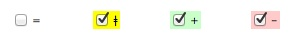

The window displayed when opening *.uml.traces files are a tabular view of all the trace information from Information Requirements to SCS structure, from SCS via re-usable mappings to CDA implementation models in MDHT, and from MDHT UML to Java and PDF documents.
On the bottom left of the tabular trace matrix window are tabs that are pre-configured to show only a subset of the available columns. The horizontal traces from IRs to generated documents and code are always retained regardless of which view is open. A view is simply a selection of the columns available in correlated traces from one end to the other.
Filters are selections of the data in the Trace Matrix which match a text string typed into the "Filter" box at the bottom of the window. The data may not appear on the screen if its column is not visible. Any substring match of a displayed table cell means its row will be displayed. If you want to match regular expressions, tick the "RE" checkbox next to the Filter.
OR: Why is the left-most column in some views structured with little arrows that allow structures to be shown and hidden?
"Tree-based views" allow for a single tree-structured column to be shown in the left-most position. These tree columns are sorted in depth-first tree order, and tree node contents can be hidden by clicking on the down arrow icon () or revealed by clicking on the side-arrow icon (). The right-click context menu of the tree column header also allows the whole tree to be expanded ("Expand All"), or collapsed ("Collapse All").
Trees are particularly useful for model columns, like the SCS Data Components, which show the SCS Tree, or MDHT Elements, which show the UML CDA Model structure. The other example is "Requirments" which are shown in their Requirment Groupings that are derived from NEAR/EA, and also appear in the IR documents.
You can turn off the tree view by unticking the T[ ] box at the bottom.
You can close the "*.uml.traces" or "diff.traces" tab, and re-open.
You can right click anywhere in the table and select "Clear all sorting".

These allow for a difference between two traces to show what is the same in two models being compared ("="), what is only in the second model (green "+"), what is only in the first model (red "-"), or what objects are the same in both models but have changed attributes ( yellow "!="). The items that are new/added/changed may not be visible in some views (it depends on which column they are in). See the Overview if you can’t work out what’s changed.